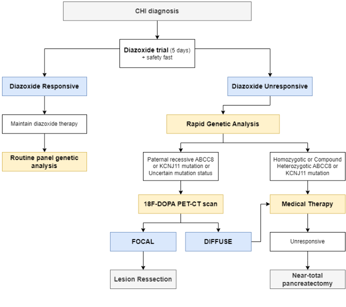

Ask a research question about Congenital Isolated Hyperinsulinism. OpenScientist will conduct autonomous deep research using the Disorder Mechanisms Knowledge Base and PubMed literature (typically 10-30 minutes).
Do not include personal health information in your question. Questions and results are cached in your browser's local storage.
name: Congenital Isolated Hyperinsulinism
creation_date: "2026-06-17T22:45:00Z"
category: Genetic
disease_term:
preferred_term: congenital isolated hyperinsulinism
term:
id: MONDO:0019010
label: congenital isolated hyperinsulinism
parents:
- Inborn Error of Metabolism
- Endocrine Disease
references:
- reference: PMID:20301549
title: "Nonsyndromic Genetic Hyperinsulinism Overview."
tags:
- GeneReviews
classifications:
harrisons_chapter:
- classification_value: ENDOCRINOLOGY_METABOLISM
- classification_value: GENETICS_ENVIRONMENT_DISEASE
channelopathy_category:
classification_value: epithelial channelopathy
has_subtypes:
- name: KATP-HI Diffuse
display_name: Diffuse KATP Hyperinsulinism (HHF1/HHF2; ABCC8/KCNJ11)
description: >-
Whole-pancreas beta-cell involvement caused by recessive (or dominant)
inactivating variants in the K-ATP channel genes ABCC8 (SUR1, HHF1) or
KCNJ11 (Kir6.2, HHF2). This is the most common cause of severe, early-onset,
diazoxide-unresponsive CHI; refractory disease may require near-total
pancreatectomy.
evidence:
- reference: PMID:37056678
reference_title: "K(ATP) channel mutations in congenital hyperinsulinism: Progress and challenges towards mechanism-based therapies."
supports: SUPPORT
evidence_source: HUMAN_CLINICAL
snippet: "Genetic defects that lead to loss of expression or function of KATP channels are the most common cause of HI (KATP-HI)."
explanation: Confirms K-ATP channel loss-of-function as the most common cause of CHI.
- reference: PMID:38963811
reference_title: "Clinical and Genetic Characteristics of Congenital Hyperinsulinism in Norway: A Nationwide Cohort Study."
supports: SUPPORT
evidence_source: HUMAN_CLINICAL
snippet: "Although most ABCC8 variants caused immediate disease onset with severe hypoglycemia and were diazoxide-unresponsive, 8 probands had a heterozygous, apparently dominant variant with milder phenotype."
explanation: Confirms ABCC8 variants typically cause severe, diazoxide-unresponsive disease, with milder dominant forms also occurring.
- name: KATP-HI Focal
display_name: Focal KATP Hyperinsulinism
description: >-
A localized lesion of hyperfunctional beta-cells arising from a paternally
inherited recessive ABCC8/KCNJ11 variant unmasked by post-zygotic loss of
the maternal 11p15 allele within the lesion. Focal disease is potentially
cured by limited surgical resection (lesionectomy) guided by 18F-DOPA PET/CT.
evidence:
- reference: PMID:35018160
reference_title: "Early diagnosis of focal congenital hyperinsulinism: A fluorine-18-labeled l-dihydroxyphenylalanine positron emission tomography/computed tomography study."
supports: SUPPORT
evidence_source: HUMAN_CLINICAL
snippet: "histopathological lesions, diffuse and focal, have been associated with these different genetic alterations."
explanation: Confirms the focal versus diffuse histological dichotomy associated with the underlying genetic defect.
- reference: PMID:39741883
reference_title: "Congenital hyperinsulinism in the Ukraine: a 10-year national study."
supports: SUPPORT
evidence_source: HUMAN_CLINICAL
snippet: "After surgery, complete recovery was observed in all 14 with focal disease, while relapse occurred in three patients with diffuse or atypical histology."
explanation: Confirms focal disease is surgically curable, in contrast to diffuse/atypical disease.
- name: HI/HA Syndrome
display_name: Hyperinsulinism-Hyperammonemia Syndrome (HHF6; GLUD1)
description: >-
Hyperinsulinism-hyperammonemia syndrome caused by dominant activating
mutations of GLUD1 (glutamate dehydrogenase) that interfere with inhibitory
GTP regulation. Features leucine/protein-sensitive hypoglycemia, persistent
mild hyperammonemia, and a predisposition to developmental delay and
epilepsy; usually diazoxide-responsive.
evidence:
- reference: PMID:21130127
reference_title: "Two genetic forms of hyperinsulinemic hypoglycemia caused by dysregulation of glutamate dehydrogenase."
supports: SUPPORT
evidence_source: HUMAN_CLINICAL
snippet: "the hyperinsulinism/hyperammonemia syndrome caused by dominant activating mutations of GLUD1 which interfere with inhibitory regulation by GTP"
explanation: Confirms the GLUD1 activating-mutation mechanism of HI/HA syndrome.
- name: SCHAD-HI
display_name: HADH (SCHAD) Hyperinsulinism (HHF4)
description: >-
Recessive deficiency of short-chain 3-hydroxyacyl-CoA dehydrogenase (HADH/
SCHAD) causing protein/leucine-sensitive hyperinsulinism through loss of an
inhibitory protein-protein interaction between SCHAD and glutamate
dehydrogenase; typically diazoxide-responsive.
evidence:
- reference: PMID:21130127
reference_title: "Two genetic forms of hyperinsulinemic hypoglycemia caused by dysregulation of glutamate dehydrogenase."
supports: SUPPORT
evidence_source: HUMAN_CLINICAL
snippet: "hyperinsulinism due to recessive deficiency of short-chain 3-hydroxy-acyl-CoA dehydrogenase (SCHAD, encoded by HADH1)"
explanation: Confirms recessive HADH/SCHAD deficiency as a cause of CHI.
- name: HNF4A/HNF1A-HI
display_name: Transcription-Factor Hyperinsulinism (HNF4A/HNF1A)
description: >-
Dominant HNF4A or HNF1A variants causing a dual phenotype of transient or
persistent hyperinsulinism in the newborn period followed by maturity-onset
diabetes of the young (MODY) later in life. Often associated with fetal
macrosomia and diazoxide responsiveness.
evidence:
- reference: PMID:25733449
reference_title: "Molecular mechanisms of congenital hyperinsulinism."
supports: SUPPORT
evidence_source: HUMAN_CLINICAL
snippet: "Genetic abnormalities in HNF4A and HNF1A lead to a dual phenotype of HH in the newborn period and maturity onset-diabetes later in life."
explanation: Confirms the biphasic hyperinsulinism-then-diabetes phenotype of HNF4A/HNF1A.
- name: GCK-HI
display_name: Glucokinase Hyperinsulinism (HHF3; GCK)
description: >-
Dominant activating variants in GCK (glucokinase, the beta-cell glucose
sensor) lower the glucose threshold for insulin secretion, producing
hyperinsulinemic hypoglycemia of variable severity and diazoxide
responsiveness.
evidence:
- reference: PMID:25733449
reference_title: "Molecular mechanisms of congenital hyperinsulinism."
supports: SUPPORT
evidence_source: HUMAN_CLINICAL
snippet: "genetic abnormalities in nine different genes (ABCC8, KCNJ11, GLUD1, GCK, HNF4A, HNF1A, SLC16A1, UCP2 and HADH) have been identified which cause CHI."
explanation: Confirms GCK is among the established CHI-causing genes.
prevalence:
- population: Norway live births
percentage: 1 in 19,400 live births
notes: >-
Minimum birth prevalence estimated from a nationwide Norwegian cohort.
Reported incidence in the broader literature ranges from about 1:28,000 to
1:50,000 in Western populations, rising toward 1:2,500 in populations with
high consanguinity.
evidence:
- reference: PMID:38963811
reference_title: "Clinical and Genetic Characteristics of Congenital Hyperinsulinism in Norway: A Nationwide Cohort Study."
supports: SUPPORT
evidence_source: HUMAN_CLINICAL
snippet: "The minimum birth prevalence of CHI in Norway is 1:19,400 live births."
explanation: Provides a nationwide population-based birth-prevalence estimate for CHI.
pathophysiology:
- name: KATP Channel Loss of Function
description: >
Inactivating variants in ABCC8 (SUR1) or KCNJ11 (Kir6.2), which together
form the beta-cell ATP-sensitive potassium (K-ATP) channel, cause loss of
channel expression or function. The K-ATP channel is the central regulator
of insulin secretion: under normal conditions it keeps the beta-cell
membrane hyperpolarized when glucose is low. Loss of K-ATP channel function
removes this brake on the membrane potential. K-ATP channel defects are the
most common molecular cause of CHI and underlie both diffuse and focal
histological disease.
cell_types:
- preferred_term: pancreatic beta cell
term:
id: CL:0000169
label: type B pancreatic cell
biological_processes:
- preferred_term: potassium ion transmembrane transport
term:
id: GO:0071805
label: potassium ion transmembrane transport
modifier: DECREASED
- preferred_term: regulation of insulin secretion
term:
id: GO:0050796
label: regulation of insulin secretion
modifier: DYSREGULATED
cellular_components:
- preferred_term: plasma membrane
term:
id: GO:0005886
label: plasma membrane
locations:
- preferred_term: islet of Langerhans
term:
id: UBERON:0000006
label: islet of Langerhans
genes:
- preferred_term: ABCC8
term:
id: hgnc:59
label: ABCC8
- preferred_term: KCNJ11
term:
id: hgnc:6257
label: KCNJ11
evidence:
- reference: PMID:37056678
reference_title: "K(ATP) channel mutations in congenital hyperinsulinism: Progress and challenges towards mechanism-based therapies."
supports: SUPPORT
evidence_source: HUMAN_CLINICAL
snippet: "In pancreatic β-cells, adenosine triphosphate (ATP)-sensitive K+ (KATP) channels are a central regulator of insulin secretion vital for glucose homeostasis."
explanation: Establishes the K-ATP channel as the central regulator of insulin secretion whose defect causes CHI.
- reference: PMID:37056678
reference_title: "K(ATP) channel mutations in congenital hyperinsulinism: Progress and challenges towards mechanism-based therapies."
supports: SUPPORT
evidence_source: HUMAN_CLINICAL
snippet: "Genetic defects that lead to loss of expression or function of KATP channels are the most common cause of HI (KATP-HI)."
explanation: Confirms loss of K-ATP channel expression/function as the leading molecular cause of CHI.
downstream:
- target: Unregulated Beta-Cell Depolarization and Insulin Secretion
description: >-
Loss of K-ATP channel function leaves the beta-cell membrane
inappropriately depolarized, opening voltage-gated calcium channels and
raising cytosolic calcium so that insulin is secreted even when blood
glucose is low.
causal_link_type: DIRECT
evidence:
- reference: PMID:21130127
reference_title: "Two genetic forms of hyperinsulinemic hypoglycemia caused by dysregulation of glutamate dehydrogenase."
supports: SUPPORT
evidence_source: HUMAN_CLINICAL
snippet: "insulin secretion is stimulated by oxidation of glucose via an increase in ATP/ADP ratio which leads to closure of ATP-sensitive KATP channels, membrane depolarization, activation of voltage-gated calcium channels, an increase in cytosolic calcium, and a mobilization of insulin-containing vesicles to release insulin into the circulation."
explanation: Describes the K-ATP-to-calcium-to-insulin-release cascade that is rendered constitutive when the channel cannot close/open appropriately.
- name: Unregulated Beta-Cell Depolarization and Insulin Secretion
description: >
The downstream consequence of K-ATP channel loss of function (or of
amino-acid/metabolic defects upstream of the channel) is constitutive
beta-cell membrane depolarization, opening of voltage-gated calcium
channels, increased cytosolic calcium, and exocytosis of insulin granules.
The result is inappropriate insulin secretion that continues despite
hypoglycemia, the biochemical hallmark of CHI.
cell_types:
- preferred_term: pancreatic beta cell
term:
id: CL:0000169
label: type B pancreatic cell
biological_processes:
- preferred_term: membrane depolarization
term:
id: GO:0051899
label: membrane depolarization
modifier: INCREASED
- preferred_term: insulin secretion
term:
id: GO:0030073
label: insulin secretion
modifier: INCREASED
chemical_entities:
- preferred_term: insulin
term:
id: CHEBI:145810
label: insulin
modifier: INCREASED
locations:
- preferred_term: islet of Langerhans
term:
id: UBERON:0000006
label: islet of Langerhans
evidence:
- reference: PMID:25733449
reference_title: "Molecular mechanisms of congenital hyperinsulinism."
supports: SUPPORT
evidence_source: HUMAN_CLINICAL
snippet: "Congenital hyperinsulinism (CHI) is a complex heterogeneous condition in which insulin secretion from pancreatic β-cells is unregulated and inappropriate for the level of blood glucose."
explanation: Defines the unregulated, glucose-inappropriate insulin secretion that is the core mechanistic node of CHI.
downstream:
- target: Hyperinsulinemic Hypoglycemia and Neuroglycopenia
description: >-
Inappropriate insulin action drives glucose into insulin-sensitive
tissues and suppresses ketogenesis and lipolysis, producing severe
non-ketotic hypoglycemia that deprives the brain of both glucose and
ketone fuels and risks seizures and permanent neurological injury.
causal_link_type: DIRECT
evidence:
- reference: PMID:25733449
reference_title: "Molecular mechanisms of congenital hyperinsulinism."
supports: SUPPORT
evidence_source: HUMAN_CLINICAL
snippet: "The inappropriate insulin secretion drives glucose into the insulin-sensitive tissues, such as the muscle, liver and adipose tissue, leading to severe hyperinsulinaemic hypoglycaemia (HH)."
explanation: Links unregulated insulin secretion to severe hyperinsulinemic hypoglycemia.
- name: Hyperinsulinemic Hypoglycemia and Neuroglycopenia
description: >
Inappropriate insulin secretion produces severe, often non-ketotic
hypoglycemia. Because insulin suppresses ketogenesis, the brain is deprived
of both glucose and the ketone bodies it would normally use as an
alternative fuel during fasting, so neuroglycopenia is more profound than in
other causes of hypoglycemia. Recurrent or prolonged hypoglycemia carries a
considerable risk of seizures, developmental delay, and permanent
neurological damage.
cell_types:
- preferred_term: neuron
term:
id: CL:0000540
label: neuron
biological_processes:
- preferred_term: glucose homeostasis
term:
id: GO:0042593
label: glucose homeostasis
modifier: DYSREGULATED
chemical_entities:
- preferred_term: glucose
term:
id: CHEBI:17234
label: glucose
modifier: DECREASED
locations:
- preferred_term: brain
term:
id: UBERON:0000955
label: brain
evidence:
- reference: PMID:35183224
reference_title: "Congenital hyperinsulinism in infancy and childhood: challenges, unmet needs and the perspective of patients and families."
supports: SUPPORT
evidence_source: HUMAN_CLINICAL
snippet: "Congenital hyperinsulinism (CHI) is the most common cause of persistent hypoglycemia in infants and children, and carries a considerable risk of neurological damage and developmental delays if diagnosis and treatment are delayed."
explanation: Links hyperinsulinemic hypoglycemia in CHI to neurological damage and developmental delay.
downstream:
- target: Hyperinsulinemic Hypoglycemia
causal_link_type: DIRECT
description: Inappropriate insulin secretion produces the defining hyperinsulinemic hypoglycemia phenotype.
evidence:
- reference: PMID:25733449
reference_title: "Molecular mechanisms of congenital hyperinsulinism."
supports: SUPPORT
evidence_source: HUMAN_CLINICAL
snippet: "The inappropriate insulin secretion drives glucose into the insulin-sensitive tissues, such as the muscle, liver and adipose tissue, leading to severe hyperinsulinaemic hypoglycaemia (HH)."
explanation: The source directly links inappropriate insulin secretion to severe hyperinsulinemic hypoglycemia.
- target: Neonatal Hypoglycemia
causal_link_type: DIRECT
description: Persistent hyperinsulinemic hypoglycemia commonly presents during the neonatal period.
evidence:
- reference: PMID:40904956
reference_title: "Neonatal Congenital Hyperinsulinism: A Case-Based Contribution to the Understanding of a Rare Disorder."
supports: SUPPORT
evidence_source: HUMAN_CLINICAL
snippet: "Congenital hyperinsulinism (CHI) is a rare but significant cause of persistent neonatal hypoglycemia (NH), associated with a high risk of neurological complications if not promptly treated."
explanation: The case report explicitly identifies CHI as a cause of persistent neonatal hypoglycemia.
- target: Seizures
causal_link_type: INDIRECT_KNOWN_INTERMEDIATES
intermediate_mechanisms:
- Severe hypoglycemia causes neuroglycopenia.
description: Severe neuroglycopenia from hypoglycemia can present with generalized seizures.
evidence:
- reference: PMID:40904956
reference_title: "Neonatal Congenital Hyperinsulinism: A Case-Based Contribution to the Understanding of a Rare Disorder."
supports: SUPPORT
evidence_source: HUMAN_CLINICAL
snippet: "We report the case of a male macrosomic newborn admitted on the second day of life for respiratory distress, generalized seizures, and severe hypoglycemia (1.4 mmol/L) unresponsive to intravenous glucose therapy."
explanation: The reported neonatal CHI presentation links severe hypoglycemia with generalized seizures.
- target: Neurodevelopmental Sequelae
causal_link_type: INDIRECT_KNOWN_INTERMEDIATES
intermediate_mechanisms:
- Recurrent or delayed-treated hypoglycemia injures the developing brain.
description: Delayed diagnosis or recurrent hypoglycemia can cause neurologic damage and developmental delay.
evidence:
- reference: PMID:35183224
reference_title: "Congenital hyperinsulinism in infancy and childhood: challenges, unmet needs and the perspective of patients and families."
supports: SUPPORT
evidence_source: HUMAN_CLINICAL
snippet: "Congenital hyperinsulinism (CHI) is the most common cause of persistent hypoglycemia in infants and children, and carries a considerable risk of neurological damage and developmental delays if diagnosis and treatment are delayed."
explanation: The review directly supports neurologic damage and developmental delay downstream of delayed recognition and treatment of CHI hypoglycemia.
- name: Glutamate Dehydrogenase Dysregulation (Amino-Acid-Driven HI)
description: >
In a distinct mechanistic arm, dominant activating GLUD1 variants
(hyperinsulinism-hyperammonemia syndrome) or recessive HADH/SCHAD deficiency
increase glutamate dehydrogenase (GDH) activity in the beta cell. Leucine
allosterically activates GDH, driving glutamate oxidation through the TCA
cycle, raising the ATP/ADP ratio, and converging on the same K-ATP-channel
closure and insulin-release pathway, producing protein/leucine-sensitive
hypoglycemia. Increased GDH activity in liver/kidney also generates the mild
hyperammonemia characteristic of HI/HA syndrome.
cell_types:
- preferred_term: pancreatic beta cell
term:
id: CL:0000169
label: type B pancreatic cell
biological_processes:
- preferred_term: insulin secretion
term:
id: GO:0030073
label: insulin secretion
modifier: INCREASED
genes:
- preferred_term: GLUD1
term:
id: hgnc:4335
label: GLUD1
- preferred_term: HADH
term:
id: hgnc:4799
label: HADH
evidence:
- reference: PMID:25733449
reference_title: "Molecular mechanisms of congenital hyperinsulinism."
supports: SUPPORT
evidence_source: HUMAN_CLINICAL
snippet: "Mutations in GLUD1 and HADH lead to leucine-induced HH, and these two genes encode the key enzymes glutamate dehydrogenase and short chain 3-hydroxyacyl-CoA dehydrogenase which play a key role in amino acid and fatty acid regulation of insulin secretion respectively."
explanation: Establishes the GLUD1/HADH amino-acid-driven mechanism as a distinct cause of leucine-induced hyperinsulinism.
- reference: PMID:21130127
reference_title: "Two genetic forms of hyperinsulinemic hypoglycemia caused by dysregulation of glutamate dehydrogenase."
supports: SUPPORT
evidence_source: HUMAN_CLINICAL
snippet: "amino acids can trigger release of insulin in response to the oxidation of amino acids through glutamate via GDH into the TCA cycle under allosteric activation of GDH by leucine."
explanation: Describes how leucine-activated GDH converges on insulin secretion in the beta cell.
downstream:
- target: Unregulated Beta-Cell Depolarization and Insulin Secretion
description: >-
Increased GDH-driven glutamate oxidation raises the beta-cell ATP/ADP
ratio, leading to K-ATP channel closure, membrane depolarization, and
voltage-gated calcium channel activation — converging on the same
depolarization-to-insulin-release pathway as K-ATP channel
loss-of-function variants.
causal_link_type: INDIRECT_KNOWN_INTERMEDIATES
evidence:
- reference: PMID:21130127
reference_title: "Two genetic forms of hyperinsulinemic hypoglycemia caused by dysregulation of glutamate dehydrogenase."
supports: SUPPORT
evidence_source: HUMAN_CLINICAL
snippet: "insulin secretion is stimulated by oxidation of glucose via an increase in ATP/ADP ratio which leads to closure of ATP-sensitive KATP channels, membrane depolarization, activation of voltage-gated calcium channels, an increase in cytosolic calcium, and a mobilization of insulin-containing vesicles to release insulin into the circulation."
explanation: Establishes the shared ATP/ADP→K-ATP closure→depolarization→calcium→insulin pathway downstream of GDH activation.
- target: Hyperammonemia
description: GDH dysregulation in the HI/HA subtype produces persistent plasma ammonia elevation.
causal_link_type: DIRECT
evidence:
- reference: PMID:21130127
reference_title: "Two genetic forms of hyperinsulinemic hypoglycemia caused by dysregulation of glutamate dehydrogenase."
supports: SUPPORT
evidence_source: HUMAN_CLINICAL
snippet: "The other distinctive feature of the HI/HA Syndrome is a persistent elevation of plasma ammonia concentrations."
explanation: The source identifies persistent hyperammonemia as a distinctive feature of the GLUD1 hyperinsulinism-hyperammonemia subtype.
phenotypes:
- name: Hyperinsulinemic Hypoglycemia
description: >-
Inappropriately elevated insulin and C-peptide during hypoglycemia, with
suppressed ketones and free fatty acids; the defining biochemical feature of
CHI.
phenotype_term:
preferred_term: Hyperinsulinemic hypoglycemia
term:
id: HP:0000825
label: Hyperinsulinemic hypoglycemia
evidence:
- reference: PMID:40904956
reference_title: "Neonatal Congenital Hyperinsulinism: A Case-Based Contribution to the Understanding of a Rare Disorder."
supports: SUPPORT
evidence_source: HUMAN_CLINICAL
snippet: "This condition is characterized by inappropriate insulin secretion, often of genetic origin, independent of blood glucose levels."
explanation: Confirms inappropriate, glucose-independent insulin secretion as the defining feature.
- name: Neonatal Hypoglycemia
description: >-
Persistent hypoglycemia presenting in the neonatal period, often within the
first days of life and frequently unresponsive to intravenous glucose alone.
phenotype_term:
preferred_term: Neonatal hypoglycemia
term:
id: HP:0001998
label: Neonatal hypoglycemia
evidence:
- reference: PMID:40904956
reference_title: "Neonatal Congenital Hyperinsulinism: A Case-Based Contribution to the Understanding of a Rare Disorder."
supports: SUPPORT
evidence_source: HUMAN_CLINICAL
snippet: "Congenital hyperinsulinism (CHI) is a rare but significant cause of persistent neonatal hypoglycemia (NH), associated with a high risk of neurological complications if not promptly treated."
explanation: Confirms persistent neonatal hypoglycemia as the core presenting phenotype.
- name: Seizures
description: >-
Generalized seizures may occur as a manifestation of severe neuroglycopenia,
and can be the presenting feature of CHI.
phenotype_term:
preferred_term: Seizure
term:
id: HP:0001250
label: Seizure
evidence:
- reference: PMID:40904956
reference_title: "Neonatal Congenital Hyperinsulinism: A Case-Based Contribution to the Understanding of a Rare Disorder."
supports: SUPPORT
evidence_source: HUMAN_CLINICAL
snippet: "We report the case of a male macrosomic newborn admitted on the second day of life for respiratory distress, generalized seizures, and severe hypoglycemia (1.4 mmol/L) unresponsive to intravenous glucose therapy."
explanation: Documents generalized seizures with severe hypoglycemia as a presenting feature of neonatal CHI.
- name: Large for Gestational Age
description: >-
Fetal hyperinsulinism acts as a growth factor in utero, so affected infants
are frequently macrosomic / large for gestational age at birth.
phenotype_term:
preferred_term: Macrosomia
term:
id: HP:0001520
label: Large for gestational age
evidence:
- reference: PMID:40904956
reference_title: "Neonatal Congenital Hyperinsulinism: A Case-Based Contribution to the Understanding of a Rare Disorder."
supports: SUPPORT
evidence_source: HUMAN_CLINICAL
snippet: "We report the case of a male macrosomic newborn admitted on the second day of life"
explanation: Documents macrosomia (large for gestational age) in a newborn with CHI.
- name: Neurodevelopmental Sequelae
description: >-
Recurrent hypoglycemia carries a high risk of neurological damage and
developmental delay; neurologic sequelae were reported in roughly half of
probands in a nationwide cohort.
phenotype_term:
preferred_term: Global developmental delay
term:
id: HP:0001263
label: Global developmental delay
evidence:
- reference: PMID:38963811
reference_title: "Clinical and Genetic Characteristics of Congenital Hyperinsulinism in Norway: A Nationwide Cohort Study."
supports: SUPPORT
evidence_source: HUMAN_CLINICAL
snippet: "Neurologic sequelae were reported in 53% of the CHI probands."
explanation: Quantifies the frequency of neurological sequelae in a nationwide CHI cohort.
- name: Hyperammonemia
description: >-
Persistent mild elevation of plasma ammonia, characteristic of the GLUD1
hyperinsulinism-hyperammonemia (HI/HA) subtype.
subtype: HI/HA Syndrome
phenotype_term:
preferred_term: Hyperammonemia
term:
id: HP:0001987
label: Hyperammonemia
evidence:
- reference: PMID:21130127
reference_title: "Two genetic forms of hyperinsulinemic hypoglycemia caused by dysregulation of glutamate dehydrogenase."
supports: SUPPORT
evidence_source: HUMAN_CLINICAL
snippet: "The other distinctive feature of the HI/HA Syndrome is a persistent elevation of plasma ammonia concentrations."
explanation: Confirms persistent hyperammonemia as the distinctive feature of the GLUD1 HI/HA subtype.
- name: Maturity-Onset Diabetes
description: >-
HNF4A and HNF1A variants produce a biphasic phenotype: neonatal
hyperinsulinism followed by maturity-onset diabetes of the young (MODY)
later in life.
subtype: HNF4A/HNF1A-HI
phenotype_term:
preferred_term: Maturity-onset diabetes of the young
term:
id: HP:0004904
label: Maturity-onset diabetes of the young
evidence:
- reference: PMID:25733449
reference_title: "Molecular mechanisms of congenital hyperinsulinism."
supports: SUPPORT
evidence_source: HUMAN_CLINICAL
snippet: "Genetic abnormalities in HNF4A and HNF1A lead to a dual phenotype of HH in the newborn period and maturity onset-diabetes later in life."
explanation: Confirms later-life MODY in the HNF4A/HNF1A subtype.
genetic:
- name: KATP channel gene variants (ABCC8, KCNJ11)
gene_term:
preferred_term: ABCC8
term:
id: hgnc:59
label: ABCC8
association: Causative
inheritance:
- name: Autosomal recessive
description: >-
Biallelic recessive ABCC8/KCNJ11 variants cause severe diffuse CHI;
dominant heterozygous variants cause milder forms; a single paternal
recessive variant unmasked by maternal 11p15 loss causes focal disease.
features: >-
ABCC8 (SUR1) and KCNJ11 (Kir6.2) encode the two subunits of the beta-cell
K-ATP channel and are the most common causes of medically unresponsive CHI.
ABCC8 variants dominated the genetically solved cases in nationwide cohorts.
evidence:
- reference: PMID:25733449
reference_title: "Molecular mechanisms of congenital hyperinsulinism."
supports: SUPPORT
evidence_source: HUMAN_CLINICAL
snippet: "Autosomal recessive and dominant mutations in ABCC8/KCNJ11 are the commonest cause of medically unresponsive CHI."
explanation: Confirms ABCC8/KCNJ11 as the most common cause of medically (diazoxide) unresponsive CHI, in both recessive and dominant forms.
- reference: PMID:38963811
reference_title: "Clinical and Genetic Characteristics of Congenital Hyperinsulinism in Norway: A Nationwide Cohort Study."
supports: SUPPORT
evidence_source: HUMAN_CLINICAL
snippet: "ABCC8 variants were most common (n= 40), and 5 novel variants were identified."
explanation: Confirms ABCC8 as the most frequently identified causal gene in a nationwide CHI cohort.
- name: KCNJ11 variants (HHF2)
gene_term:
preferred_term: KCNJ11
term:
id: hgnc:6257
label: KCNJ11
association: Causative
inheritance:
- name: Autosomal recessive
description: >-
Biallelic recessive KCNJ11 variants cause severe diffuse CHI. Dominant
heterozygous variants cause milder disease; a paternal KCNJ11 variant can
underlie focal disease when unmasked by somatic 11p15 loss of heterozygosity.
features: >-
KCNJ11 encodes Kir6.2, the pore-forming subunit of the beta-cell K-ATP
channel; together with ABCC8/SUR1 it forms the octameric channel complex.
KCNJ11 loss-of-function variants are the second most common cause of
medically unresponsive CHI.
evidence:
- reference: PMID:25733449
reference_title: "Molecular mechanisms of congenital hyperinsulinism."
supports: SUPPORT
evidence_source: HUMAN_CLINICAL
snippet: "Autosomal recessive and dominant mutations in ABCC8/KCNJ11 are the commonest cause of medically unresponsive CHI."
explanation: Confirms KCNJ11 variants alongside ABCC8 as the commonest cause of medically unresponsive CHI.
- reference: PMID:39741883
reference_title: "Congenital hyperinsulinism in the Ukraine: a 10-year national study."
supports: SUPPORT
evidence_source: HUMAN_CLINICAL
snippet: "Pathogenic variants in the K-ATP channel genes were the only identified genetic cause of p-CHI (ABCC8 (n=17) and KCNJ11 (n=2))"
explanation: Confirms KCNJ11 as a causal K-ATP channel gene in persistent CHI in a national cohort.
- name: GLUD1 activating variants
gene_term:
preferred_term: GLUD1
term:
id: hgnc:4335
label: GLUD1
association: Causative
inheritance:
- name: Autosomal dominant
description: >-
Dominant activating GLUD1 variants cause hyperinsulinism-hyperammonemia
syndrome, with both de novo and parent-to-child transmission reported.
features: >-
GLUD1 encodes glutamate dehydrogenase; activating variants that impair GTP
inhibition cause leucine-sensitive hyperinsulinism with hyperammonemia.
evidence:
- reference: PMID:21130127
reference_title: "Two genetic forms of hyperinsulinemic hypoglycemia caused by dysregulation of glutamate dehydrogenase."
supports: SUPPORT
evidence_source: HUMAN_CLINICAL
snippet: "the hyperinsulinism/hyperammonemia syndrome caused by dominant activating mutations of GLUD1 which interfere with inhibitory regulation by GTP"
explanation: Confirms dominant activating GLUD1 variants as the cause of HI/HA syndrome.
treatments:
- name: Diazoxide
description: >-
First-line chronic pharmacotherapy. Diazoxide is a K-ATP channel activator
that opens SUR1-containing channels to suppress insulin secretion;
effectiveness depends strongly on genotype, and most inactivating
ABCC8/KCNJ11 (diffuse KATP-HI) disease is diazoxide-unresponsive.
therapeutic_modality: SMALL_MOLECULE
treatment_term:
preferred_term: Pharmacotherapy
term:
id: NCIT:C15986
label: Pharmacotherapy
therapeutic_agent:
- preferred_term: diazoxide
term:
id: CHEBI:4495
label: diazoxide
evidence:
- reference: PMID:37056678
reference_title: "K(ATP) channel mutations in congenital hyperinsulinism: Progress and challenges towards mechanism-based therapies."
supports: SUPPORT
evidence_source: HUMAN_CLINICAL
snippet: "treatment remains challenging, in particular for patients with diffuse disease who do not respond to the KATP channel activator diazoxide."
explanation: Confirms diazoxide as a K-ATP channel activator and that diffuse KATP-HI is typically diazoxide-unresponsive.
- name: Octreotide and Long-Acting Somatostatin Analogs
description: >-
Second-line therapy for diazoxide-unresponsive CHI. Continuous subcutaneous
octreotide suppresses insulin secretion; patients are increasingly switched
to long-acting somatostatin analogs such as lanreotide, often combined with
home continuous glucose monitoring.
therapeutic_modality: PEPTIDE
treatment_term:
preferred_term: Pharmacotherapy
term:
id: NCIT:C15986
label: Pharmacotherapy
therapeutic_agent:
- preferred_term: octreotide
term:
id: CHEBI:7726
label: octreotide
- preferred_term: lanreotide
term:
id: CHEBI:135901
label: lanreotide
evidence:
- reference: PMID:38993725
reference_title: "Clinical management of diazoxide-unresponsive congenital hyperinsulinism: A single-center experience."
supports: SUPPORT
evidence_source: HUMAN_CLINICAL
snippet: "Remarkable advancements in diagnostic tools and treatments, including novel imaging and genetic techniques, and continuous subcutaneous octreotide administration, have improved the prognosis of diazoxide-unresponsive CHI"
explanation: Confirms continuous subcutaneous octreotide as a treatment that improves prognosis in diazoxide-unresponsive CHI.
- reference: PMID:38993725
reference_title: "Clinical management of diazoxide-unresponsive congenital hyperinsulinism: A single-center experience."
supports: SUPPORT
evidence_source: HUMAN_CLINICAL
snippet: "our cases suggest a safe method of switching from octreotide to lanreotide, elucidate the efficacy of home-based CGM monitoring"
explanation: Supports switching to long-acting lanreotide and home CGM in CHI management.
- name: Focal Lesionectomy
description: >-
Surgical resection of a localized focal lesion, guided by 18F-DOPA PET/CT,
is curative in focal CHI. In a national cohort all focal cases achieved
complete recovery after surgery.
therapeutic_modality: SURGERY
treatment_term:
preferred_term: pancreatectomy
term:
id: MAXO:0001070
label: pancreatectomy
evidence:
- reference: PMID:39741883
reference_title: "Congenital hyperinsulinism in the Ukraine: a 10-year national study."
supports: SUPPORT
evidence_source: HUMAN_CLINICAL
snippet: "After surgery, complete recovery was observed in all 14 with focal disease, while relapse occurred in three patients with diffuse or atypical histology."
explanation: Confirms that surgical resection of focal lesions is curative, whereas diffuse disease can relapse.
- name: Near-Total Pancreatectomy
description: >-
Reserved for refractory diffuse CHI that fails medical therapy. Carries
substantial later risk of diabetes mellitus and exocrine pancreatic
insufficiency.
therapeutic_modality: SURGERY
treatment_term:
preferred_term: pancreatectomy
term:
id: MAXO:0001070
label: pancreatectomy
evidence:
- reference: PMID:35018160
reference_title: "Early diagnosis of focal congenital hyperinsulinism: A fluorine-18-labeled l-dihydroxyphenylalanine positron emission tomography/computed tomography study."
supports: SUPPORT
evidence_source: HUMAN_CLINICAL
snippet: "In these patients, the lesion can be surgically removed allowing complete resolution of clinical alterations."
explanation: Supports surgical removal as definitive treatment; near-total pancreatectomy is the diffuse-disease analog reserved for refractory cases.
diagnosis:
- name: Critical Sample During Hypoglycemia
description: >-
Biochemical diagnosis rests on a "critical sample" obtained during
hypoglycemia showing detectable/inappropriately unsuppressed insulin and
C-peptide, suppressed ketones and free fatty acids, and a positive glycemic
response to glucagon.
evidence:
- reference: PMID:40904956
reference_title: "Neonatal Congenital Hyperinsulinism: A Case-Based Contribution to the Understanding of a Rare Disorder."
supports: SUPPORT
evidence_source: HUMAN_CLINICAL
snippet: "Laboratory investigations revealed elevated insulin and C-peptide levels, absence of ketone bodies, and a positive response to the glucagon stimulation test."
explanation: Documents the classic critical-sample biochemical profile diagnostic of CHI.
- name: 18F-DOPA PET/CT Imaging
description: >-
18F-DOPA PET/CT differentiates focal from diffuse histological disease and
localizes focal lesions preoperatively, enabling subtype-targeted limited
resection rather than extensive near-total pancreatectomy.
diagnosis_term:
preferred_term: positron emission tomography procedure
term:
id: MAXO:0000137
label: positron emission tomography procedure
evidence:
- reference: PMID:35018160
reference_title: "Early diagnosis of focal congenital hyperinsulinism: A fluorine-18-labeled l-dihydroxyphenylalanine positron emission tomography/computed tomography study."
supports: SUPPORT
evidence_source: HUMAN_CLINICAL
snippet: "18F-DOPA PET/CT imaging differentiates focal from diffuse disease and is 100% accurate in localizing the focal lesion."
explanation: Confirms the diagnostic role of 18F-DOPA PET/CT in distinguishing focal from diffuse disease and precisely localizing focal lesions.
clinical_trials:
- name: NCT00571324
phase: PHASE_I
status: COMPLETED
description: >-
Open-label pilot study evaluating whether the GLP-1 receptor antagonist
exendin-(9-39) increases fasting blood glucose in subjects with congenital
hyperinsulinism.
target_phenotypes:
- preferred_term: Hyperinsulinemic hypoglycemia
term:
id: HP:0000825
label: Hyperinsulinemic hypoglycemia
evidence:
- reference: clinicaltrials:NCT00571324
supports: SUPPORT
snippet: "an antagonist of the glucagon-like peptide-1 (GLP-1) receptor with effects on the pancreatic beta cell, increases fasting blood glucose levels in subjects with congenital hyperinsulinism."
explanation: Trial testing GLP-1 receptor antagonism (exendin-(9-39)) as an experimental therapy for CHI.
datasets: []
Congenital (isolated) hyperinsulinism (CHI) is characterized by inappropriate insulin secretion despite low blood glucose, and is widely described as the most common cause of persistent hypoglycemia in infancy/childhood (mittal2024molecularmechanismsunderlying pages 1-2, takasawa2024clinicalmanagementof pages 1-6). It is clinically, genetically, and histologically heterogeneous, with focal, diffuse, and atypical forms; correct subtype classification is critical because focal CHI can be surgically cured, while diffuse disease often requires long-term medical therapy and occasionally near-total pancreatectomy (mittal2024molecularmechanismsunderlying pages 1-2, globa2024congenitalhyperinsulinismin pages 1-2, graca2023managingcongenitalhyperinsulinisma pages 33-37).
| Domain | Key findings | Supporting citation IDs |
|---|---|---|
| Definition | Congenital isolated hyperinsulinism (CHI) is inappropriate insulin secretion despite hypoglycemia and is the most common cause of persistent hypoglycemia in infancy/childhood. Presentation is usually neonatal or early infancy and may be life-threatening because of recurrent neuroglycopenia. | (mittal2024molecularmechanismsunderlying pages 1-2, globa2024congenitalhyperinsulinismin pages 1-2, banerjee2022congenitalhyperinsulinismin pages 1-2) |
| Histologic/clinical subtypes | Diffuse CHI: whole-pancreas β-cell involvement, often due to recessive or dominant KATP-channel defects; often medically difficult and may require near-total pancreatectomy. Focal CHI: localized lesion, classically from a paternally inherited ABCC8/KCNJ11 variant plus somatic loss of maternal 11p15; potentially curable by limited resection. Atypical CHI: less common mixed/nonclassic histology. | (mittal2024molecularmechanismsunderlying pages 1-2, globa2024congenitalhyperinsulinismin pages 1-2, globa2024congenitalhyperinsulinismin pages 2-3, burroni2021earlydiagnosisof pages 1-2) |
| Major causal genes | Most common genes are ABCC8 and KCNJ11 (KATP channel; SUR1/Kir6.2). Other reported genes include GLUD1, GCK, HADH, SLC16A1, HNF4A, HNF1A, UCP2, CACNA1D, and less commonly syndromic/non-isolated causes in broader HI cohorts. KATP defects account for ~40–50% of persistent CHI in recent national data. | (ouadghiri2025neonatalcongenitalhyperinsulinism pages 5-6, mittal2024molecularmechanismsunderlying pages 1-2, globa2024congenitalhyperinsulinismin pages 1-2, burroni2021earlydiagnosisof pages 1-2) |
| Gene-specific phenotype notes | ABCC8/KCNJ11: often diazoxide-unresponsive when inactivating; diffuse with biallelic/dominant forms, focal with single paternal recessive variant. GLUD1: hyperinsulinism-hyperammonemia, usually diazoxide responsive. GCK: activating variants can cause CHI. HADH, HNF4A, HNF1A: often diazoxide responsive in many cases. SLC16A1: exercise/protein-sensitive phenotypes reported in HI literature. | (ouadghiri2025neonatalcongenitalhyperinsulinism pages 5-6, takasawa2024clinicalmanagementof pages 1-6, globa2024congenitalhyperinsulinismin pages 2-3) |
| Typical inheritance | Autosomal recessive and autosomal dominant forms both occur; focal disease typically reflects paternal inheritance plus somatic maternal allele loss in the lesion. Consanguinity increases incidence in some populations. | (ouadghiri2025neonatalcongenitalhyperinsulinism pages 5-6, mittal2024molecularmechanismsunderlying pages 1-2, banerjee2022congenitalhyperinsulinismin pages 1-2) |
| Critical sample hallmarks | During hypoglycemia, typical findings are detectable/inappropriately unsuppressed insulin and C-peptide, suppressed ketones and free fatty acids, and high glucose infusion requirement often >8–10 mg/kg/min. Example review data include insulin 14.4 µIU/mL, C-peptide 1 ng/mL, ketones 0.5 mmol/L in a CHI case. | (ouadghiri2025neonatalcongenitalhyperinsulinism pages 5-6, mittal2024molecularmechanismsunderlying pages 1-2, graca2023managingcongenitalhyperinsulinism media 3dcd38ca, graca2023managingcongenitalhyperinsulinism media 1893ff72) |
| Dynamic testing | A positive glycemic response to glucagon during hypoglycemia supports excess insulin action and depleted hepatic glycogen stores in CHI. | (ouadghiri2025neonatalcongenitalhyperinsulinism pages 5-6, mittal2024molecularmechanismsunderlying pages 1-2) |
| Imaging/pathology | 18F-DOPA PET/CT is central for distinguishing focal from diffuse disease and localizing focal lesions preoperatively; reported performance in one cohort/review: sensitivity 88%, specificity 94%, accuracy 88–100%. | (globa2024congenitalhyperinsulinismin pages 2-3, burroni2021earlydiagnosisof pages 1-2) |
| First-line treatment | Diazoxide is the only approved first-line chronic drug; it opens SUR1-containing KATP channels. Effectiveness exceeds 70% overall in one 2024 single-center summary, but response strongly depends on genotype. | (mittal2024molecularmechanismsunderlying pages 1-2, takasawa2024clinicalmanagementof pages 1-6, graca2023managingcongenitalhyperinsulinisma pages 33-37) |
| Second-line/adjunct treatment | Octreotide is the common second-line therapy for diazoxide-unresponsive CHI; long-acting somatostatin analogs such as lanreotide are used in practice. Home CGM is increasingly used for management and feeding/treatment adjustment. | (takasawa2024clinicalmanagementof pages 1-6, globa2024congenitalhyperinsulinismin pages 2-3, graca2023managingcongenitalhyperinsulinisma pages 33-37) |
| Surgery | Focal lesionectomy/partial pancreatectomy can be curative. Near-total pancreatectomy is reserved for refractory diffuse CHI because of later diabetes/exocrine insufficiency risk. In the Ukrainian national cohort, complete recovery occurred in all 14 focal cases after surgery. | (mittal2024molecularmechanismsunderlying pages 1-2, globa2024congenitalhyperinsulinismin pages 1-2, burroni2021earlydiagnosisof pages 1-2, graca2023managingcongenitalhyperinsulinisma pages 33-37) |
| Emerging/refractory therapies | Sirolimus and nifedipine are described as refractory/off-label options in reviews. GLP-1 receptor antagonist exendin(9-39) has been tested in pilot trials; NCT00571324 was an open-label randomized crossover phase 1/2 study (n=9), and NCT00835328 studied infants with diazoxide-refractory CHI. | (graca2023managingcongenitalhyperinsulinisma pages 33-37, NCT00571324 chunk 1, NCT00835328 chunk 2) |
| Epidemiology | Reported incidence is ~1:28,000–1:50,000 in Western populations, rising to ~1:2,500 where consanguinity is higher. Japanese estimates cited in a 2024 series were 1 in 13,600 for transient CHI and 1 in 31,600 for persistent CHI. | (banerjee2022congenitalhyperinsulinismin pages 1-2, takasawa2024clinicalmanagementof pages 1-6) |
| Genetic diagnosis rates | In the 2024 Ukrainian national study, a molecular diagnosis was made in 67.5% (27/40) overall, including 86.3% (19/22) of persistent CHI and 44.4% (8/18) of early-remission CHI. | (globa2024congenitalhyperinsulinismin pages 1-2) |
| Histology proportions | In 19 surgically characterized Ukrainian persistent CHI cases, histology was focal 73.7% (14/19), diffuse 10.5% (2/19), atypical 15.8% (3/19). | (globa2024congenitalhyperinsulinismin pages 1-2) |
| Clinical presentation stats | Hypoglycemia presents in the first week in 60–70% of cases; ~50% present with seizures; 20–30% are diagnosed in the first year and ~10% after age 1 year. | (banerjee2022congenitalhyperinsulinismin pages 1-2) |
| Neurodevelopment/QoL burden | Abnormal neurodevelopmental outcomes have been reported in 26–44% of children in the QoL review. HI Global Registry/family survey data showed 70% (36/51) of parents of children <5 years felt life was “ruled by HI,” 48% (59/123) reported physical health impact, and 67% (82/123) mental health impact. | (kristensen2021healthrelatedqualityof pages 1-2, banerjee2022congenitalhyperinsulinismin pages 9-10) |
| Economic burden | A UK cost-of-illness study estimated total annual CHI cost to the NHS at £3,408,398.59, average £2,124.95 per patient; 5.9% of patients (95 infants in first year of life) accounted for 61.8% of total costs. | (banerjee2022congenitalhyperinsulinismin pages 9-10, graca2023managingcongenitalhyperinsulinism pages 43-45) |
Table: This table condenses the main disease-definition, genetics, diagnostic, treatment, and burden-of-disease findings for congenital isolated hyperinsulinism. It is useful as a quick-reference evidence map with directly traceable context-ID citations.
Primary causal factor: genetic disruption of pancreatic β-cell insulin secretion regulation, particularly KATP-channel pathway genes ABCC8/KCNJ11 (mittal2024molecularmechanismsunderlying pages 1-2, globa2024congenitalhyperinsulinismin pages 1-2).
Genotype–histology correlations - Diffuse CHI: arises from dominant or recessive KATP mutations (recessive often more severe) (mittal2024molecularmechanismsunderlying pages 1-2). - Focal CHI: classically results from a paternally inherited germline KATP pathogenic variant plus post-zygotic loss of the maternal allele in the focal lesion (somatic UPD/unmasking), enabling curative lesionectomy (ouadghiri2025neonatalcongenitalhyperinsulinism pages 5-6, mittal2024molecularmechanismsunderlying pages 1-2, globa2024congenitalhyperinsulinismin pages 2-3).
Onset and presentation - CHI commonly presents early: a 2022 Orphanet Journal of Rare Diseases review (Feb 2022; URL https://doi.org/10.1186/s13023-022-02214-y) reports hypoglycemia presents in the first week in 60–70% of cases; ~50% present with seizures; 20–30% diagnosed in the first year and ~10% after age 1 year (banerjee2022congenitalhyperinsulinismin pages 1-2). - Neonatal/infant presentations include severe non-ketotic hypoglycemia, lethargy, seizures, and other neuroglycopenic symptoms (ouadghiri2025neonatalcongenitalhyperinsulinism pages 5-6, banerjee2022congenitalhyperinsulinismin pages 1-2).
Laboratory phenotype - Non-ketotic hypoglycemia with suppressed ketones and free fatty acids plus detectable/inappropriately high insulin/C-peptide during hypoglycemia (ouadghiri2025neonatalcongenitalhyperinsulinism pages 5-6, mittal2024molecularmechanismsunderlying pages 1-2).
(HPO IDs are provided as standard ontology suggestions; not directly asserted by the retrieved papers, which describe the underlying clinical features.)
GO biological process (examples): - Regulation of insulin secretion - Glucose homeostasis - Potassium ion transmembrane transport
Cell type (CL) suggestions: - Pancreatic β cell (endocrine pancreas)
(These are standard mechanistic ontology mappings; the retrieved evidence supports β-cell involvement and insulin secretion dysregulation.)
UBERON suggestions: pancreas; pancreatic islet of Langerhans.
Biochemical characterization during hypoglycemia is central. - Typical critical sample features described include inappropriate insulin and detectable C-peptide, hypoketonemia, low free fatty acids, and positive glycemic response to glucagon, often with high glucose infusion needs (>8–10 mg/kg/min) (ouadghiri2025neonatalcongenitalhyperinsulinism pages 5-6, mittal2024molecularmechanismsunderlying pages 1-2).
The 2023 review includes a diagnostic biochemical criteria table (graca2023managingcongenitalhyperinsulinism media 1893ff72) and a management flowchart incorporating biochemical and genetic steps (graca2023managingcongenitalhyperinsulinism media 3dcd38ca).
A 2023 review presents a management algorithm (graca2023managingcongenitalhyperinsulinism media 3dcd38ca) and discusses that: - Diazoxide is the only approved first-line chronic drug (graca2023managingcongenitalhyperinsulinism pages 33-37, graca2023managingcongenitalhyperinsulinisma pages 33-37). - Octreotide and long-acting somatostatin analogs are used as second-line therapies; nifedipine and sirolimus are reserved for refractory cases in some settings (graca2023managingcongenitalhyperinsulinisma pages 33-37).
A 2024 single-center experience provides pragmatic implementation details for diazoxide-unresponsive CHI, including: - Emphasis on early genetic diagnosis guiding therapy decisions; - Continuous subcutaneous octreotide as a common second-line approach to avoid subtotal pancreatectomy; - Switching to long-acting somatostatin analogs such as lanreotide and using home continuous glucose monitoring (CGM) for management (takasawa2024clinicalmanagementof pages 1-6).
ClinicalTrials.gov evidence (trial registry; provides dates and protocol design): - NCT00571324 (“Effect of Exendin-(9-39) on Glycemic Control in Subjects With Congenital Hyperinsulinism”) is a randomized crossover, open-label Phase 1/2 pilot study (enrollment 9) evaluating whether exendin(9-39) increases fasting glucose and characterizing pharmacokinetics; study start 2007-08; completion 2014-12; results posted 2016-11-09; last update 2017-12-11 (NCT00571324 chunk 1). - NCT00835328 (“Effect of Exendin (9-39) on Glucose Requirements to Maintain Euglycemia”) targets infants <12 months with diazoxide-refractory CHI and includes PK endpoints and metabolic measures (insulin/glucose and beta-hydroxybutyrate sampling) (NCT00835328 chunk 2).
URL (ClinicalTrials.gov): https://clinicaltrials.gov/study/NCT00571324 ; https://clinicaltrials.gov/study/NCT00835328 (NCT00571324 chunk 1, NCT00835328 chunk 2).
(MAXO IDs not retrievable within this run; terms are provided as controlled-action suggestions.)
References
(mittal2024molecularmechanismsunderlying pages 1-2): Medha Mittal, Amit Kumar Gupta, and Seema Kapoor. Molecular mechanisms underlying congenital hyperinsulinemia of infancy and its relevance to management – a review. Journal of Pediatric Endocrinology and Diabetes, 4:9-20, Aug 2024. URL: https://doi.org/10.25259/jped_25_2024, doi:10.25259/jped_25_2024. This article has 1 citations.
(globa2024congenitalhyperinsulinismin pages 1-2): Evgenia Globa, Henrik Thybo Christesen, Michael Bau Mortensen, Jayne A. L. Houghton, Anne Lerberg Nielsen, Sönke Detlefsen, and Sarah E. Flanagan. Congenital hyperinsulinism in the ukraine: a 10-year national study. Frontiers in Endocrinology, Dec 2024. URL: https://doi.org/10.3389/fendo.2024.1497579, doi:10.3389/fendo.2024.1497579. This article has 4 citations.
(banerjee2022congenitalhyperinsulinismin pages 1-2): Indraneel Banerjee, Julie Raskin, Jean-Baptiste Arnoux, Diva D. De Leon, Stuart A. Weinzimer, Mette Hammer, David M. Kendall, and Paul S. Thornton. Congenital hyperinsulinism in infancy and childhood: challenges, unmet needs and the perspective of patients and families. Orphanet Journal of Rare Diseases, Feb 2022. URL: https://doi.org/10.1186/s13023-022-02214-y, doi:10.1186/s13023-022-02214-y. This article has 101 citations and is from a peer-reviewed journal.
(takasawa2024clinicalmanagementof pages 1-6): Kei Takasawa, Ryosei Iemura, Ryuta Orimoto, Haruki Yamano, Shizuka Kirino, Eriko Adachi, Yoko Saito, Kurara Yamamoto, Nozomi Matsuda, Shigeru Takishima, Kumi Shuno, Hanako Tajima, Manabu Sugie, Yuki Mizuno, Akito Sutani, Kentaro Okamoto, Michiya Masue, Tomohiro Morio, and Kenichi Kashimada. Clinical management of diazoxide-unresponsive congenital hyperinsulinism: a single-center experience. Clinical Pediatric Endocrinology, 33:187-194, Jun 2024. URL: https://doi.org/10.1297/cpe.2024-0004, doi:10.1297/cpe.2024-0004. This article has 4 citations and is from a peer-reviewed journal.
(graca2023managingcongenitalhyperinsulinisma pages 33-37): IMCG Graça. Managing congenital hyperinsulinism: a review of current diagnostic and therapeutic methods. Unknown journal, 2023.
(globa2024congenitalhyperinsulinismin pages 2-3): Evgenia Globa, Henrik Thybo Christesen, Michael Bau Mortensen, Jayne A. L. Houghton, Anne Lerberg Nielsen, Sönke Detlefsen, and Sarah E. Flanagan. Congenital hyperinsulinism in the ukraine: a 10-year national study. Frontiers in Endocrinology, Dec 2024. URL: https://doi.org/10.3389/fendo.2024.1497579, doi:10.3389/fendo.2024.1497579. This article has 4 citations.
(burroni2021earlydiagnosisof pages 1-2): Luca Burroni, Andrea Palucci, Giuseppina Biscontini, and Valentino Cherubini. Early diagnosis of focal congenital hyperinsulinism: a fluorine-18-labeled l-dihydroxyphenylalanine positron emission tomography/computed tomography study. World Journal of Nuclear Medicine, 20:395-397, Oct 2021. URL: https://doi.org/10.4103/wjnm.wjnm_159_20, doi:10.4103/wjnm.wjnm_159_20. This article has 4 citations and is from a peer-reviewed journal.
(ouadghiri2025neonatalcongenitalhyperinsulinism pages 5-6): Fouad Khalil El Ouadghiri, Anass Ayyad, Sahar Messaoudi, and Rim Amrani. Neonatal congenital hyperinsulinism: a case-based contribution to the understanding of a rare disorder. Cureus, Aug 2025. URL: https://doi.org/10.7759/cureus.89272, doi:10.7759/cureus.89272. This article has 0 citations.
(graca2023managingcongenitalhyperinsulinism media 3dcd38ca): IMCG Graça. Managing congenital hyperinsulinism: a review of current diagnostic and therapeutic methods. Unknown journal, 2023.
(graca2023managingcongenitalhyperinsulinism media 1893ff72): IMCG Graça. Managing congenital hyperinsulinism: a review of current diagnostic and therapeutic methods. Unknown journal, 2023.
(NCT00571324 chunk 1): Diva De Leon. Effect of Exendin-(9-39) on Glycemic Control in Subjects With Congenital Hyperinsulinism. Diva De Leon. 2007. ClinicalTrials.gov Identifier: NCT00571324
(NCT00835328 chunk 2): Diva De Leon. Effect of Exendin (9-39) on Glucose Requirements to Maintain Euglycemia. Diva De Leon. 2009. ClinicalTrials.gov Identifier: NCT00835328
(kristensen2021healthrelatedqualityof pages 1-2): Kaja Kristensen, Julia Quitmann, and Stefanie Witt. Health-related quality of life of children and adolescents with congenital hyperinsulinism – a scoping review. Frontiers in Endocrinology, Dec 2021. URL: https://doi.org/10.3389/fendo.2021.784932, doi:10.3389/fendo.2021.784932. This article has 3 citations.
(banerjee2022congenitalhyperinsulinismin pages 9-10): Indraneel Banerjee, Julie Raskin, Jean-Baptiste Arnoux, Diva D. De Leon, Stuart A. Weinzimer, Mette Hammer, David M. Kendall, and Paul S. Thornton. Congenital hyperinsulinism in infancy and childhood: challenges, unmet needs and the perspective of patients and families. Orphanet Journal of Rare Diseases, Feb 2022. URL: https://doi.org/10.1186/s13023-022-02214-y, doi:10.1186/s13023-022-02214-y. This article has 101 citations and is from a peer-reviewed journal.
(graca2023managingcongenitalhyperinsulinism pages 43-45): IMCG Graça. Managing congenital hyperinsulinism: a review of current diagnostic and therapeutic methods. Unknown journal, 2023.
(graca2023managingcongenitalhyperinsulinism pages 33-37): IMCG Graça. Managing congenital hyperinsulinism: a review of current diagnostic and therapeutic methods. Unknown journal, 2023.
